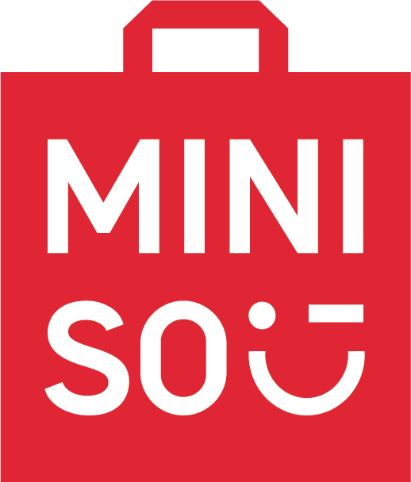
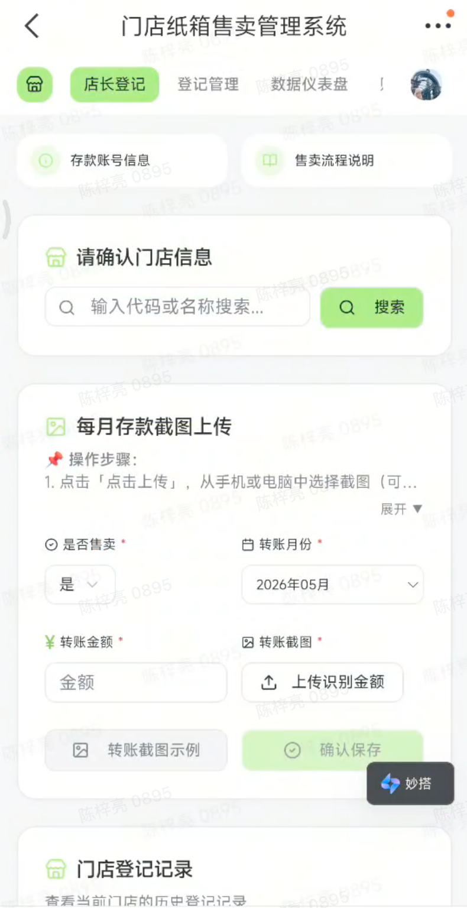
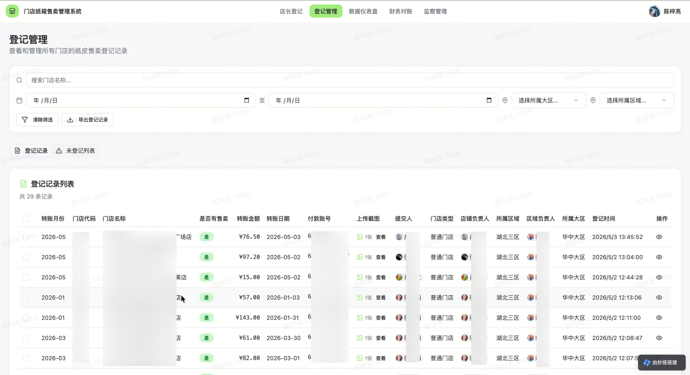
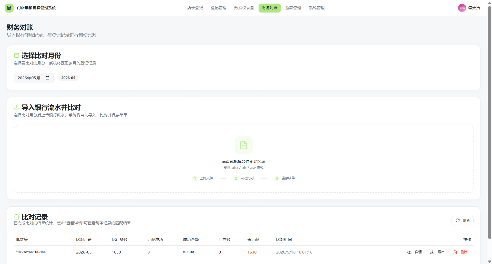
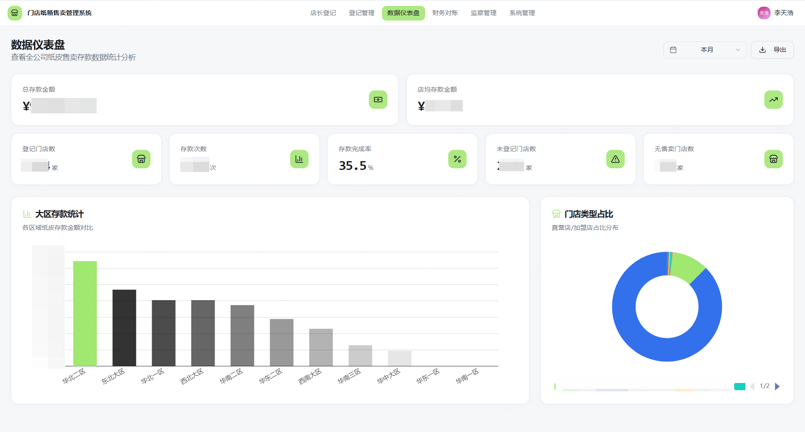

NYSE: MNSO；HKEX: 9896，2013 年由叶国富创办，2020.10 登陆纽交所、2022.7 港交所双重主要上市。
全球领先的 IP 趣味好物平台，现为全球规模最大的自有品牌综合零售商，已孵化 TOP TOY 等新品牌。

门店收货后的包装纸箱卖给回收商所得的款项；计入门店当日营收总额，财务记为「其他业务收入 / 营业外收入」。
看似微小的比例，在千店规模下是不容忽视的现金流管理课题。
数据收集、凭证上传、流水导出、人工匹配对账全靠人工，效率低易出错，市场也缺对应工具。
门店端数据、转账截图、银行流水三方分离；财务每月导流水在 Excel 按金额 / 时间人工比对，量大枯燥。
纸质记录无法留存、电子数据散落，能见度低。4700+ 门店年百万级，漏存哪怕 10% 就是大几十万流失。
飞书零散发转账截图 / 照片给区经，无固定格式渠道，极易遗漏混乱。
统一飞书应用入口标准化上传；豆包图像识别自动提取金额 / 时间 / 付款方 / 收款方，自动算总额、判重、判收款方。

区域专人在飞书单聊 / 群聊翻找记录，手工提取汇总成表核对，费时易错。
登录系统即看区域纸皮存款；按组织架构权限隔离；定时自动推送「未登记」门店清单，形成闭环。

人工核实银行流水确认各门店存款；备注不清 / 存错账号需一对一确认；无法甄别「售卖纸皮但不存款」门店。
强制指定存款账号，财务只需导出银行流水 Excel 上传，系统自动比对、自动输出异常记录。

收财务反馈后二次溯源，与区经 / 门店确认遗漏 / 错误 / 合并登记；每次整理分析需一周，易误判。
看板快速定位异常；仪表盘看清纸皮款来源占比及趋势；「运行监测」按月分析。

上报 5-10 分钟 → 1 分钟内；定时提醒避免漏报。
释放区域专人复核；督导从「人盯人」→「系统自动推送」。
从全量核对 → 处理少数异常；接银行接口可全自动。
异常分析从「一周人工对账」→「系统实时呈现」；审计效率数倍。
覆盖 4000+ 门店每笔有据可查；预计年回款提升。
从前无人监管的百万级现金流，每一笔都有迹可循。
审核中心审察部联合中国运营事业部-费用部发起；李天浩 4 月 7 日花 4-5 小时搭框架，历时 1 个多月、300+ 轮对话、多部门共创。
先明确做什么系统、面向哪些用户、实现什么功能，先搭框架再迭代。
先让 DeepSeek 输出结构化需求文档，改到满意再喂飞书妙搭。
借鉴多维表格高级权限，按组织架构做隔离，各看各的数据。
调错时一键修复把权限搞乱，发现历史版本可回退——太实用。
审察部逻辑搭的框架，财务 / 门店需求不同，是大家一起做出来的。
异常判断准确率不够就继续调；妙搭打通通讯录、表格和系统级算力。
「虽然你发了句话 AI 就在帮你工作，但你中间去做别的事，隔断会影响开发思路。」——李天浩
飞书妙搭打通通讯录 × 表格 × 系统级算力
零代码也能从 0 搭出覆盖 4000+ 门店的系统
让一线业务人，成为系统的建造者